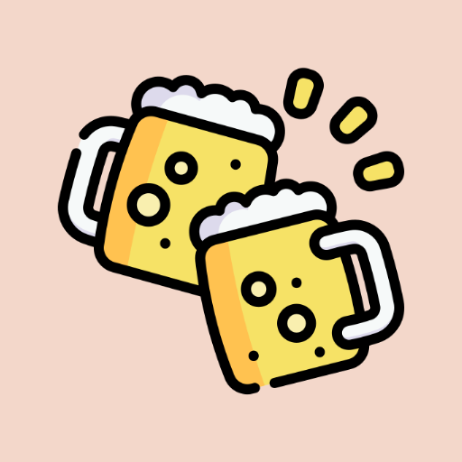
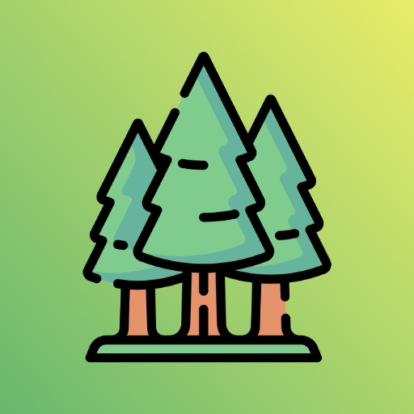
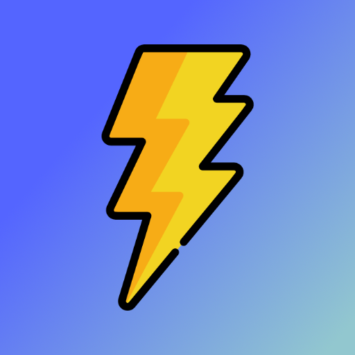
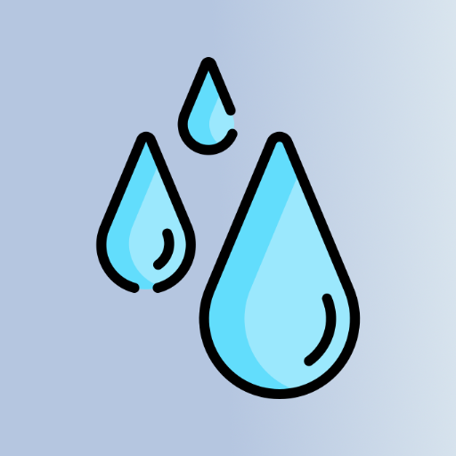

Ting jeg
har lavet
Apps, koncepter og indfald. Nogen driftsklare, de fleste proof-of-concepts og vil nok aldrig komme længere end en page på GitHub. Alle indeholder links til , og faktiske sider, hvis en sådan findes.

Find værtshuse og taprooms i nærheden. Et socialt ølkort til afturer og spontane eventyr med vennerne.
Åbn app
Find den nærmeste solskinsplads i din by. Vejr og geometri mødes, og du slipper for at sidde i skyggen.
Åbn appPlanlæg ruter der prioriterer det smukke frem for det hurtige. Til den der godt kan lide den lange vej hjem.
Se demo
Udforsk parker, skove og grønne områder i nærheden. Et kort der hjælper dig ud af hjemmet og ind i naturen.
Se demo
Realtids lynsporing for Danmark. Se tordenvejret udfolde sig på kortet og find ud af om det er på vej mod dig.
Se demo
Præcis nedbørsradar for Danmark. Hvornår rammer regnen — og hvornår holder den op? Svar på det vigtigste spørgsmål.
Åbn app